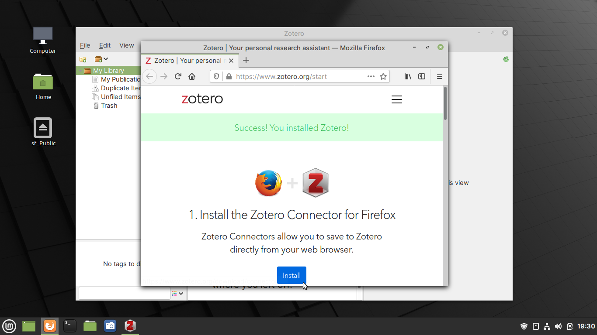

6.1.2. Collecting references from the web¶
To collect references using a web browser, you will need to install Zotero Connector — a browser add-on.
Installing Zotero Connector¶
To install Zotero Connector in Firefox:
Open Zotero from applications menu.
A browser window will open, and you will be taken to the add-on installation page.
Click on the Install button (Fig. 96).
 Fig. 96 Zotero add-on installation page¶
You will now see a dialog requesting if you would like to continue installing this add-on from www.zotero.org.
Click on the Continue to Installation button to proceed (Fig. 97).
Fig. 97 Click Continue to Installation to proceed¶
You will now see a dialog with information on the permissions required by this add-on.
Click on the Add button to proceed (Fig. 98).
Fig. 98 Click on the Add button to confirm installation¶
Installation will now proceed.
When complete, you will see a Zotero icon in the browser toolbar (Fig. 99).
Fig. 99 Zotero Connector installed successfully¶
You can now start saving articles from the browser to your Zotero library.